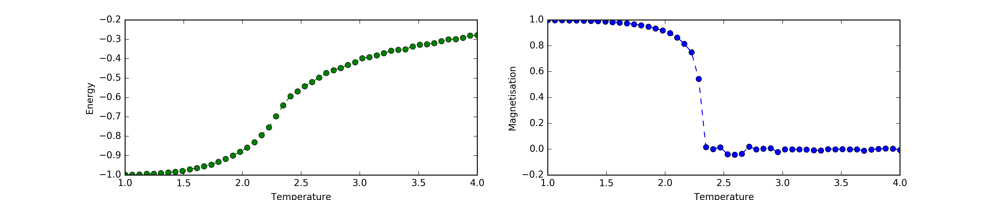
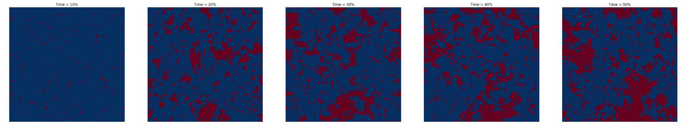

Ising Model for Ferromagnetism
1 Introduction
Almost everyone has heard of the famous Ising Model, used to model ferromagnetism. It also allows you to see how a system of interacting particles responds to a change in temperature and leads to the observation of collective phenomena like phase transitions.
In this problem, we use a Monte Carlo method called the Metropolis-Hastings algorithm to see how a 2D Ising system achieves equilibrium. We then calculate various parameters to observe the phase transitions.
1.1 What is the Ising Model?
The Ising model consists of spins (\(s\)) arranged on a lattice (grid), with each spin allowed to interact with only its nearest neighbours. The spins can either be spin-up(\(+1\)) or spin-down(\(-1\)). Based on this scenario, the total interaction energy of the system is given by:
\[ E = -J \sum_\text{all unique pairs} s_i s_j - \mu H \sum_i s_i \]{eq-main}
Where:
- ‘all unique pairs’ refers to ‘all unique nearest neighbour pairs’.
- \(J\) is the exchange constant interaction energy , \(s_i\) and \(s_j\) are spins,
- \(H\) is an external magnetic field.
- \(\mu\) is the magnetic moment associated with each spin.
1.2 Metropolis-Hasting algorithm
Why do we need the Metropolis-Hasting algorithm?
When an Ising system is in contact with a temperature bath, the exchange of thermal energy with the reservoir will cause some spins to flip. This flipping is influenced by both the thermal energy (related to \(k_B T\)) and the lattice energy \(E\). The Metropolis-Hastings algorithm is a Markov Chain Monte Carlo (MCMC) method used to simulate the behaviour of spin flips in the Ising model when it is in contact with a temperature bath. The term ‘Markov Chain’ indicates that the simulation has no memory and each iteration is based only on the current state of the system. The term ‘Monte Carlo’ indicates that the simulation uses random numbers to make decisions.
The Recipe
- Temperature: Set your temperature \(T\).
- Take \(J/k_b=1\) so that \(T\) becomes unitless.
- Initialize Create a \(N\times N\) made up of a random distribution of \(\pm 1\).
- Metropolis Step
- Select: Choose a random spin and flip it.
- Calculate Energy Change: Compute the change in energy, \(\Delta E\), due to the flip.
- Accept or Reject:
- If \(\Delta E \leq 0\), accept the new configuration.
- If \(\Delta E > 0\), accept the new configuration only if \(r \leq e^{-\Delta E / k_B T}\) where \(r\) is a uniform random number in \([0,1)\)
- Update the energy of the system with \(\Delta E\) if necessary.
- Sweep: Repeat Metropolis Step for at least \(N^2\) times.
- Record: Keep track of the energy(\(E\)), and magnetisation (\(M\)) after each sweep of \(N^2\)
- Repeat: Repeat the sweeps to allow the system to reach equilibrium.
Note: - You can loop through your lattice instead of picking random sites. - There is only a finite set of values \(\Delta E\) can take.
Why the recipe works
Let’s quickly try to understand why the Metropolis-Hasting recipe works.
Consider two microstates \(A\) and \(B\) of the system with energies \(E_A\) and \(E_B\). Let’s take \(E_A \gt E_B\).
Since \(E_A \gt E_B\) the recipe guarantees the transition \(A\rightarrow B\). So, as far as transition rates are concerned \(A\rightarrow B\) will be 1 per step. Let’s write this as:
\[ W(A\rightarrow B) = 1 \]
In the next step, we will need to consider the transition \(B\rightarrow A\). The recipe gives this a transition rate of:
\[ W(B\rightarrow A) =e ^{-(E_A-E_B)/k_B T} \]
At steady-state of the simulation, the \(A\rightarrow B\) transitions should be equal to the \(B\rightarrow A\) transitions. Since you need to be in states \(A\) or \(B\) for such a transition to occur the number of \(B\leftrightarrow A\) transitions depends on the probabilities \(P_A\) and \(P_B\) of the system being found in these states. We can then write:
\[ P_A\,W(A\rightarrow B)=P_B\,W(B\rightarrow A) \Rightarrow \dfrac{P_A}{P_B} = e ^{-(E_A-E_B)/k_B T} \]
But, this ratio of probabilities is exactly what the Boltzmann distribution demands for a system in equilibrium at a temperature \(T\)! So, the Metropolis-Hasting algorithm nicely reproduces the thermal equilibrium distribution.
2 Task
- Implement the Metropolis-Hasting algorithm and vary your temperatures to obtain the following plots that show the phase transition.

- Visualise your simulation.
